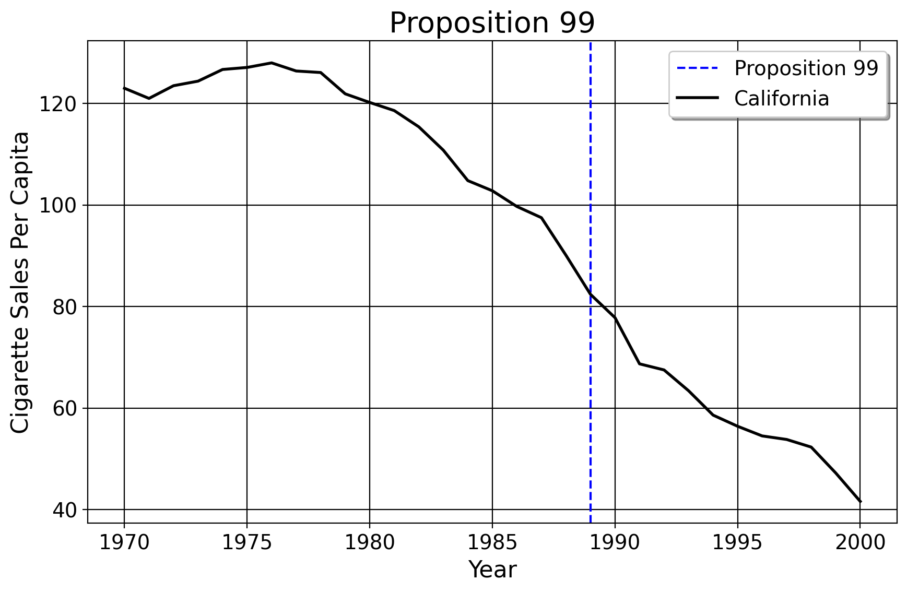

Econometrics for Policy Analysis
1 Syllabus: PMAP 4041, Fall 2024
Note
This is an ongoing project. None of the material is in its final form yet. Comments and suggestions are welcome. Jared Greathouse. Office Hours: By Request.
Every day, governments pass laws/public policy to affect some outcome of interest. Policy usually touches thousands if not millions of people. From traffic-circles to pop/sugar sweetened beverge taxes, vaccine mandates and universal pre-k programs, cannabis legalization to minimum wages, public policy impacts us all from birth to death.
Policy is never self justifying. It demands evaluation. If California bans tobacco smoking in public, or if New York City implements gun control, presumably we would agree these likely impact outcomes like tobacco use or homicide rates, ideally decreasing both of them.
If California’s anti-tobacco policy didn’t affect smoking rates at all (or worse, if more people began to smoke) or if gun control has 0 impact on homicide rates (or increased them, paradoxically), then surely these could not be justified in the very first place. Before we continue, understand fundamentally these outcomes being affected are the point. The only reason that we, as a society, do policy is precisely because we think policy affects (or should affect) people somehow. If political science studies “who gets what where”, one summation of policy studies might be “what works?” But what policies should we care about? How can we know if they work? This is the starting point for empirical policy analysis. This class discusses the theory and process for how statistical analysis of data may be used to answer policy questions.
1.1 Course Philosophy and Structure
I believe the best way to demonstrate knowledge of policy analysis is through writing. As such, there will be no quizzes or in-class exams. Why? It is unrealistic. In real life, rarely do we have an hour and 30 minutes or a ten minute quiz window on the internet to write a full summation of our ideas or think through a question. Typically, we have much more time and resources to help us. In fact, proper use of resources is what makes a good analyst: good analysts don’t need to remember everything, but they do need to be good at finding answers and using them sensibly. In this spirit, you have one assignment. Specifically, you’ll write a paper where you derive a research question you find interesting and apply the statistical concepts we cover to answer questions about a real, existing policy. Here is the breakdown of your course grade. The class is broken up into two sections: in the first section, we go over basic probability, correlation, and regression. The remainder of the class covers research for policy analysis.
- 35% of your grade comes from the first draft of the paper, 15% question and 20% draft.
- 60% for the final paper and presentation (respectively, 30 percent each), and
- 5% for attendence.
You will discuss the justification for the policy (including why we should care about understanding its effects). You’ll gather real data on the policy of interest (including information on the primary variables of interest, relevant predictors/covariates), and outcomes you’ll focus on. Finally, after you’ve defined the research question as well as collected and cleaned your dataset, you’ll use the statistical tools we cover (probability theory, descriptive statistics, and regression) to discuss the effects of the policy or intervention. The paper you produce must ask a causal question where there is at least one intervention of interest.
In many senses, public policy is a catch all term covering various disciplines. Public health scholars may care about how banning of abortion in Texas affected fertility rates, or how COVID-19 vaccine/mask mandates affected the COVID-19 case rate per capita compared to other jurisdictions that did not enact these policies. Criminologists may care about how the building of Cop City affected how many people are shot by police, or how a state legalizing cannabis affects crime rates or the consumption of alcohol. Policy historians may care about how Pinochet’s 1973 economic policies affected the GDP of Chile or about how Britain’s National Health Service of 1948 affected infant mortality. Economists may ask how Hurricane Katrina affected the economy of New Orleans. Environmental scholars may care about how a train derailment affected housing prices. These of course are just some fields; increasingly, advanced empirical methods are used in the business sector and government. Given the array of areas and topics that policy touches, I don’t care about what policy or research question you choose to study. To quote Noam Chomsky (who was quoting another MIT professor), the important part isn’t what we cover in class; it is about what we discover. The only two stipulations I have is that your rersearch question/outcomes must be 1) quantifiable with accessible data that you can use and also must 2) be interesting to you.
1.2 Additional Details
If I feel the concept is important, it’ll be in the lecture notes or we will discuss it. I will also assign external readings to be done before class.
There is no required textbook (aside from this one!) for this course. Various free textbooks exist such as Introductory Econometrics with R, Introductory Statistics, Intro to Modern Statistics, Regression and Other Stories, Intro to Econometrics, Intro to Political Science Research Methods, and many others. The Policy Department at Georgia State also recommends Introduction to Research Methods or Research Methods for the Social Sciences. The corresponding lecture will focus on the content that each respective chapter covers. Note that these books cover different aspects of the course in different levels of depth (Gelman’s book Regression and Other Stories is obviously mainly about regression, one of the last math topics we cover, whereas the others are more rudimentary).
The same is true for software– I don’t care which of these you use, but the only ones I know well are Stata, Python, and (to a lesser degree) R. For Stata users, Statalist is a great resource for Stata. R also is backed by a vast statistician community. I will sometimes include code blocks for Stata and Python in the text.
1.3 Helpful Notes from Me
Sun Tzu said every battle is won before it is fought. To reverse the perspective, as Ben Franklin said, if you fail to prepare, prepare to fail. The fact that the paper is the only assignment you have, in effect, means that I expect quality questions, idea, and analyses written in a professional manner. I do not expect perfection, or material at a level beyond the main content, but preparation is your best friend in this course.
As corollary to the preceding points, please do contact me if you have questions. Policy data analysis is what I do in my research every day. I love what I do, and I love discussing this topic with others. If you have any questions about the ideas we cover in class or have any difficulties, you may always meet with me or contact me otherwise. Thinking of your research question early, asking me for feedback, and so on helps more the earlier you talk to me.
Do not simply communicate with me. In addition, feel free to communicate with your classmates. This is something I only really learned the value of as a PHD student, so I figured I would advise the same to you. As an extension of this, I will consider allowing for collaboration on the final paper in groups of two, with my permission. For such papers to be considered, I must hear the research question well in advance, as well as the exact ideas on the data, analysis, and relevance of the question overall.
As you’ll see by skimming the sections of EPA, I frequently use graphics that I construct from real datasets which I link to. On my GitHub page, you’ll find these datsets, and more, linked to their descriptions. In lieu of finding your own dataset, you may use any of these for your class paper, should you wish.
1.4 Class Schedule
Below is the schedule. All readings for Econometrics for Policy Analysis (EPA) should be done before class. The other book chapters (unless I write otherwise) are optional.
1.4.1 Week 1
- 08-26-2024 (Monday)
Introductions and EPA, C2
- 08-28-2024 (Wednesday)
Required: EPA C3.
Optional: IS C2, IS C3 (skim), IDS C2, IDS C3, especially “Discrete Probability” and “Random Variables”.
A refresher on averages. Also covers t-tests, standard errors, and confidence intervals
1.4.2 Week 2
- 09-02-2024 (Monday)
University holiday. No clase.
- 09-04-2024 (Wednesday)
Basic Asymptotic Theory (the Law of Large Numbers, Law of Iterated Expectations, and the Central Limit Theorem)
1.4.3 Week 3
09-09-2024 (Monday)
09-11-2024 (Wednesday)
Correlation, Coeffcients, and Association (EPA, C3)
Here we cover basic correlation in 2 Dimensions, mainly using scatterplots and contingency tables.
1.4.4 Week 4
- 09-16-2024 (Monday)
Required: Watch this: Partial Derivatives OLS Explained
Optional: (ROS, C7), IS, C10. Also, Inference for OLS (Gauss-Markov Assumptions). Today, the research question is due.
- 09-18-2024 (Wednesday)
Gauss-Markov Assumptions (from the previous chapter)
1.4.5 Week 5
- 09-23-2024 (Monday)
Panel Data
- 09-25-2024 (Wednesday)
Intro to Treatment Effects
1.4.6 Week 6
- 09-30-2024 (Monday) Required: Data Types and Measurement (EPA, C5) Optional: RMSS, C6
Data Gathering/Cleaning (Sampling, Measurement)
- 10-02-2024 (Wednesday)
Data Visualization
1.4.7 Week 7
- 10-07-2024 (Monday)
Writing for Policy Analysis: The Introduction and Literature Review
- 10-09-2024 (Wednesday)
Writing for Policy Analysis: The Background
1.4.8 Week 8
- 10-14-2024 (Monday)
Writing for Policy Analysis: Data
- 10-16-2024 (Wednesday)
Writing for Policy Analysis: Methods
1.4.9 Week 9
- 10-21-2024 (Monday)
Writing for Policy Analysis: Results and Conclusions
- 10-23-2024 (Wednesday)
First Draft Due, Presentations begin.
1.4.10 Week 10
10-28-2024 (Monday)
10-30-2024 (Wednesday)
1.4.11 Week 11
11-04-2024 (Monday)
11-06-2024 (Wednesday)
1.4.12 Week 12
11-11-2024 (Monday)
11-13-2024 (Wednesday)
1.4.13 Week 13
11-18-2024 (Monday)
11-20-2024 (Wednesday)
1.4.14 Week 14
12-02-2024 (Monday)
12-04-2024 (Wednesday)
1.4.15 Week 15
12-09-2024 (Monday)
12-11-2024 (Wednesday)
1.4.16 Week 16
- 12-16-2024 (Monday)